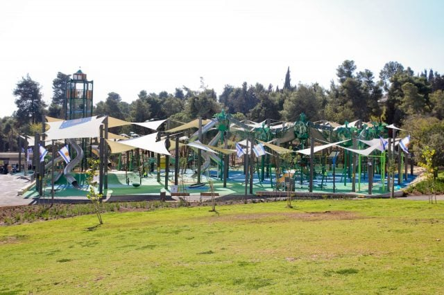

גן סאקר
הפארק הגדול והמרכזי של העיר, מושלם לפיקניקים, ספורט ומשפחות.
לפרטים נוספים →
גן נרחב המשתרע על פני כ-300 דונם, כולל מתקני כושר, מגרשי ספורט, מתקני שעשועים ואזורי דשא גדולים.
- אזור: מרכז העיר (בין שכונת רחביה לגבעת רם)
- כניסה: חופשית
- מומלץ: לריצות, משחקי כדור ואירועי יום העצמאות.